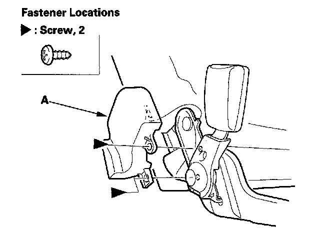
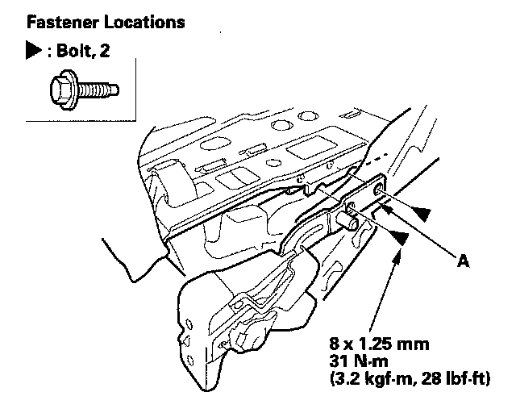

Third Row Seat Pivot
Third Row Seat Pivot ReplacementNOTE:
- Put on gloves to protect your hands.
- The left third row seat is shown; the right third row seat is similar.
1. Remove the right third row seat.
2. Remove the seat-back.
3. Remove the screws securing the seat-back recline lever.
4. Remove the back cover, then release the hooks from behind the seat-back, as needed.

5. If necessary, remove the screw, then remove the pivot cover (A).

6. Remove the bolts, then remove the seat pivot (A).
7. Install the pivot in the reverse order of removal.